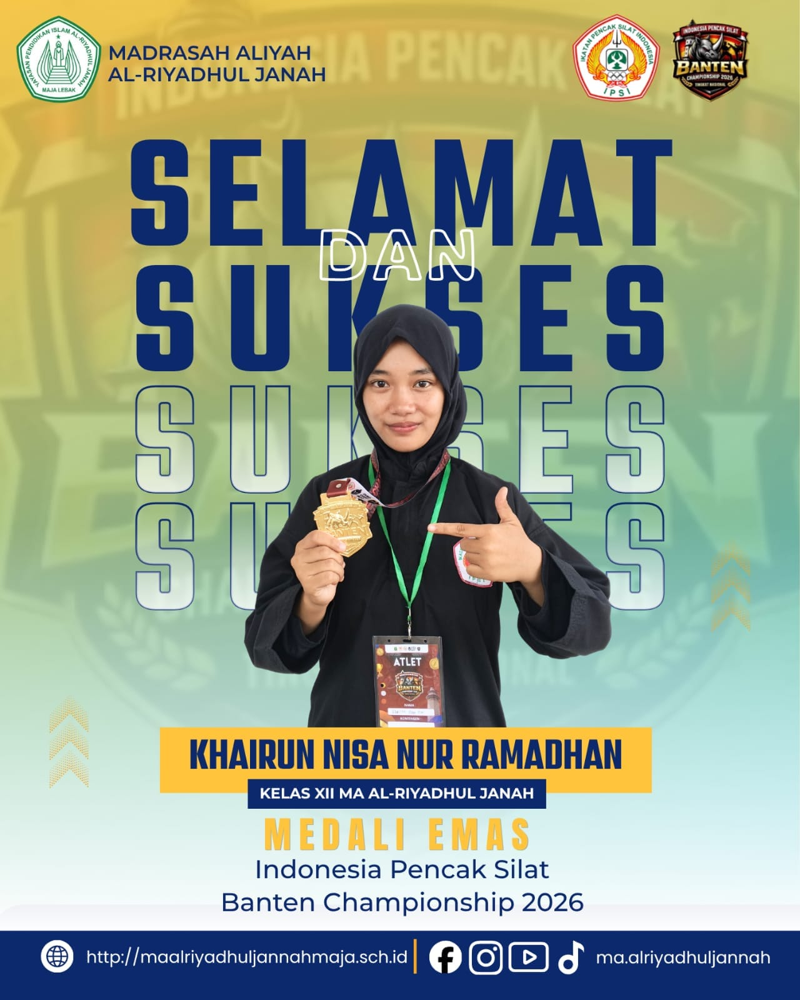

Ekstrakurikuler Pencak Silat: Membentuk Karakter Tangguh dan Raih Medali Emas di Ajang Banten Championship

Ekstrakurikuler Pencak Silat di MA Al-Riyadhul Jannah hadir sebagai wadah pembinaan seni bela diri warisan budaya bangsa yang dipadukan dengan nilai-nilai kedisiplinan dan akhlak mulia. Program ini difokuskan pada penguasaan teknik dasar bela diri, ketangkasan fisik, serta pembentukan mental yang tangguh dan sportif.
Di bawah bimbingan pelatih yang berpengalaman, para siswa dilatih secara rutin untuk mengembangkan kemampuan fisik sekaligus kepercayaan diri. Kerja keras dan dedikasi dalam latihan terbukti membuahkan hasil membanggakan melalui capaian prestasi gemilang, salah satunya keberhasilan siswi MA Al-Riyadhul Jannah, Khairun Nisa Nur Ramadhan, dalam meraih Medali Emas pada ajang Indonesia Pencak Silat Banten Championship 2026[cite: 19].
Melalui program Pencak Silat ini, madrasah berharap dapat terus melahirkan generasi muda yang sehat, berkarakter kuat, dan berprestasi di tingkat daerah hingga nasional. Lebih dari sekadar kompetisi, kegiatan ini diharapkan menanamkan jiwa ksatria, sportivitas, serta rasa bangga dalam melestarikan budaya bangsa di kehidupan sehari-hari.
← Kembali ke Berita